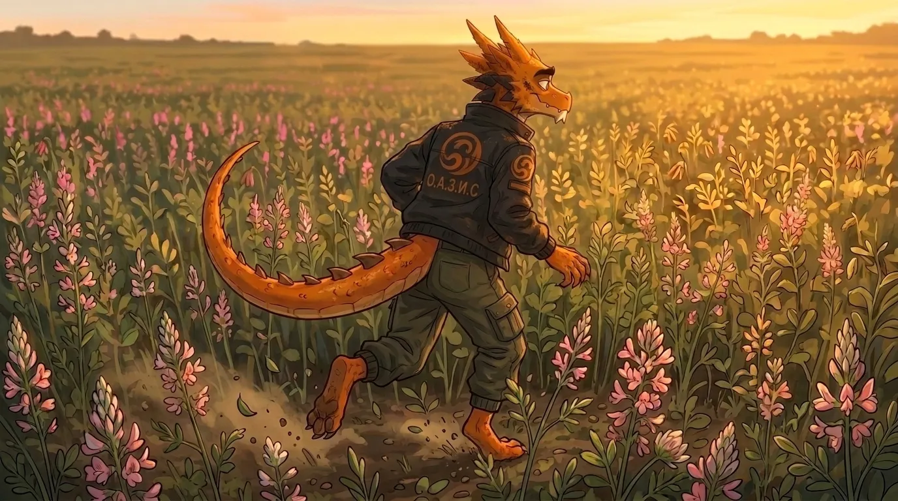
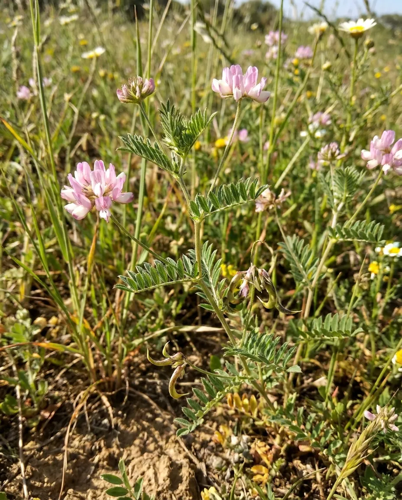
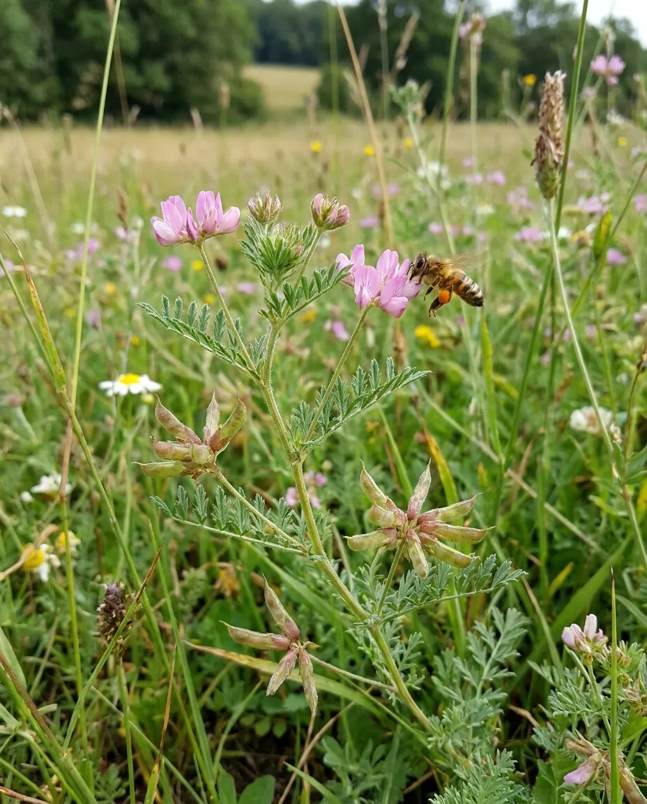

САРАДЕЛЛА
Сараделла, или сераделла посевная, — однолетняя бобовая культура, представляющая интерес как высокопитательный корм, медонос и сидеральное растение. Её используют для получения зелёной массы, сена, сенажа и выпаса, а также для улучшения структуры почвы и накопления биологического азота.
Культура хорошо проявляет себя на лёгких, песчаных и супесчаных почвах с кислой или слабокислой реакцией. Нежная зелёная масса отличается хорошей поедаемостью и высоким содержанием белка, а длительное цветение поддерживает кормовую базу опылителей. Селекционная программа направлена на создание адаптивных форм с высокой продуктивностью, устойчивостью к неблагоприятным условиям и улучшенными хозяйственно ценными признаками.

Направления селекции
- Высокая нектарная продуктивность и длительное цветение
- Скороспелость
- Дружность созревания и технологичность семеноводства
- Устойчивость к полеганию и осыпанию
- Холодостойкость и устойчивость всходов к весенним заморозкам
- Засухоустойчивость и эффективное использование влаги
